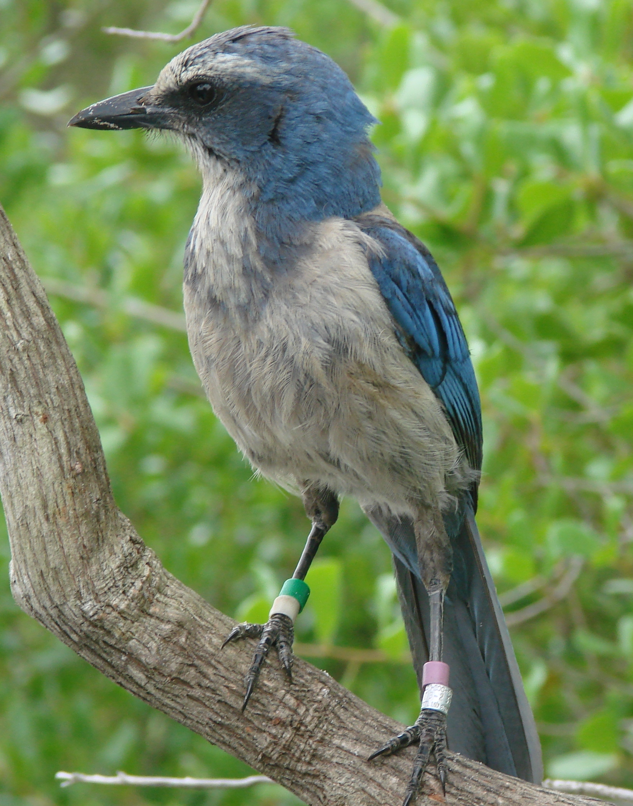

The Florida Scrub-jay (FSJ) are the only bird endemic to the Florida peninsula and the only scrub-jay found outside Western North America. Over the last 200 years anthropogenic driven habitat destruction has caused a precipitous decline of the species. As a non-migratory bird with limited dispersal confined to it's xeric scrub habitat, human development has fragmented the species into semi-isolated subpopulations across their former range. Using whole-genome sequencing from 5 demographically diverse subpopulations representing 3 genetic metapopulations we use the FSJ as a natural experiment of the genetic impacts of population decline, reduced migration, and management.
